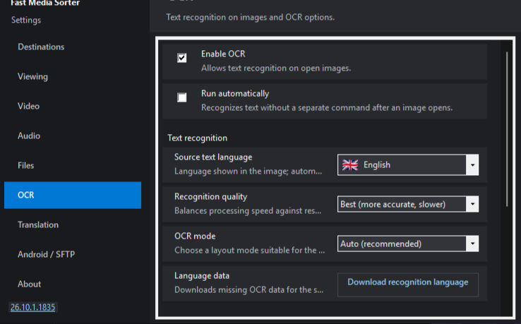
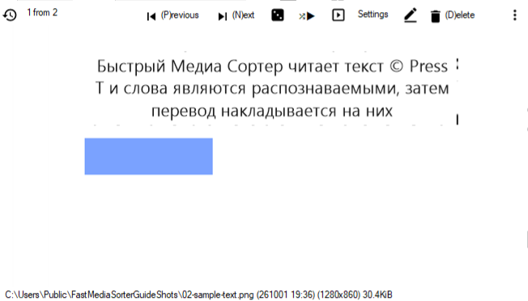

Прочитайте текст на зображенні й побачте його своєю мовою
Скан сторінки, знімок екрана, фото вивіски: переглядач розпізнає текст і малює переклад поверх кожного блоку, просто на місці. Перекладачу надсилається лише розпізнаний текст (за замовчуванням - тому, що працює на вашому ПК); саме зображення ніде не завантажується.
Увімкніть розпізнавання
Натисніть F2 для Налаштувань і відкрийте сторінку OCR у списку ліворуч. Поставте прапорець Увімкнути OCR; поруч Запускати автоматично розпізнає кожне зображення під час відкриття - вмикати його варто лише тоді, коли ви опрацьовуєте цілу теку з іншомовним текстом. Доки OCR не ввімкнено, T зберігає свій давніший сенс і просто повертає зображення.32-бітна збірка для Windows 7 і 8.1 теж розпізнає та перекладає, але має власне, старіше вікно налаштувань: усі ці параметри зібрано на одній вкладці; назви нижче - з 64-бітного переглядача.

Сторінка OCR: увімкніть розпізнавання, виберіть якість і мову вихідного тексту.
Скажіть, що саме він читає
У групі Розпізнавання тексту на цій самій сторінці вкажіть Мова початкового тексту - або залиште Автовизначення - і натисніть Завантажити пакет розпізнавання у рядку Мовні дані, щоб завантажити пакет, якого немає в комплекті. Ще два налаштування стануть у пригоді, коли сторінка чинить опір:
Якість розпізнавання - за замовчуванням Швидка (fast); Найкраща (best, повільніше) жертвує швидкістю заради точності.
Режим OCR - Авто (рекомендовано) підходить більшості зображень; Один блок, Розріджений текст, Один рядок і Вертикальний текст існують для верстки, яку авто читає погано.
Виберіть, хто перекладає
Сусідня сторінка Переклад містить перекладач, його вибирають у полі Сервіс перекладу. За замовчуванням це Ollama - мовна модель, що працює на вашому власному комп'ютері, - і рядок Локальний сервер Ollama виконує все налаштування: Встановити Ollama, Запустити Ollama, потім виберіть Модель перекладу й натисніть Завантажити. LibreTranslate - альтернатива, якщо сервер у вас уже є: його адресу вкажіть у полі Адреса сервісу. Ключ API, де він потрібен, зберігається в зашифрованому вигляді засобами Windows. Нарешті задайте Мова перекладу - ту, якою ви хочете читати. Перекладачу надсилається лише розпізнаний текст - за HTTP на адресу з поля Адреса сервісу: на локальний сервер Ollama (localhost) за замовчуванням або на вказаний вами сервер LibreTranslate, разом із ключем API, якщо його задано. Саме зображення не надсилається.
Натисніть T на зображенні
Одне натискання розпізнає зображення й показує переклад поверх нього; наступне натискання знову ховає накладання. Shift+T вмикає авторежим, у якому кожне відкрите вами зображення обробляється без запитів. Кнопка Переклад на панелі робить те саме, що й T, а клацання правою кнопкою миші по ній відкриває ці налаштування напряму.

Одне натискання T: переклад лягає поверх вихідних слів.
Налаштуйте накладання під себе
Група Переклад поверх зображення внизу сторінки Переклад (поки ви її не відкриєте, вона згорнута) задає Непрозорість панелі - за замовчуванням плашка повністю закриває оригінал, щоб переклад читався чисто; зменште її, якщо хочете, щоб зображення проглядало крізь неї. Показувати панель перекладу ховає або повертає накладання, яке вже є. Кешувати результати на диску, щоб те саме зображення не розпізнавалося двічі, на цих сторінках немає: він на сторінці Сховище, у групі Розпізнавання тексту, поруч з обмеженням розміру, зайнятим місцем і кнопкою Очистити (у 32-бітній збірці свій ліміт за замовчуванням, такого налаштування там немає).
Усе лишається на вашому комп'ютері
Розпізнавання завжди локальне. З Ollama переклад теж локальний, тож приватний документ нікуди не вивантажується. Щось залишає комп'ютер - розпізнаний текст, але не зображення, - лише якщо ви свідомо спрямуєте Адресу сервісу на зовнішній сервіс.
Якщо нічого не розпізналося
Вкажіть мову початкового тексту явно замість автовизначення, встановіть Якість розпізнаванняНайкраща (best, повільніше) і спробуйте Режим OCR, що відповідає верстці. Важкий випадок - фото, зроблене під кутом, або дуже дрібний знімок екрана: вирівняйте його або відкрийте більшу копію.